線上抽獎系統
參與部份：UI/UX
此專案可運用在單/多項抽獎上。
 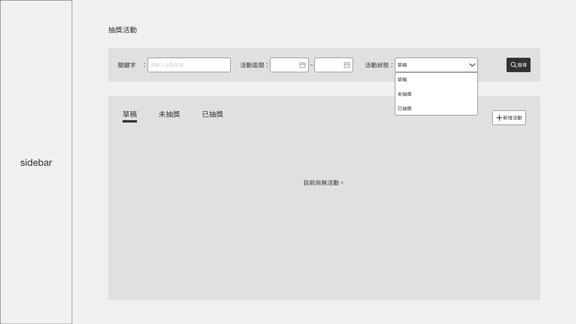
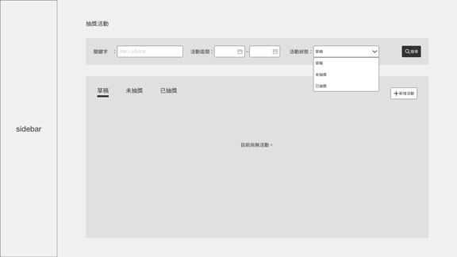
起始頁是在『列表頁』，必需在這點選『新增活動』建立抽獎活動的名稱。
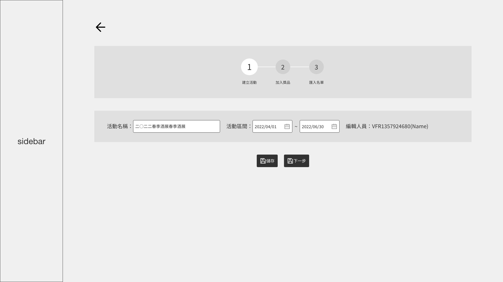
依照步驟指引即可完成抽獎前置作業，先填寫活動名稱與活動期間；
點選『儲存』會回到『列表頁』的『草稿』，點選『下一步』的會則繼續。
若尚未想要獎品名稱，可先點選『儲存』，該筆資料會在列表頁的『草稿』裡。
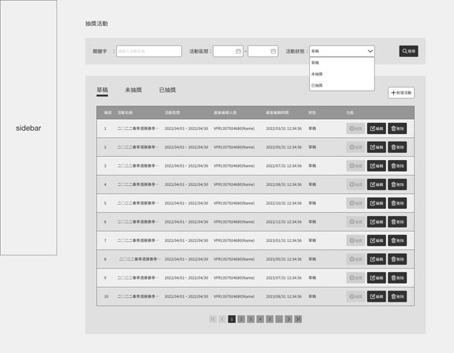點選『儲存』會自動回到『列表頁』的『草稿』
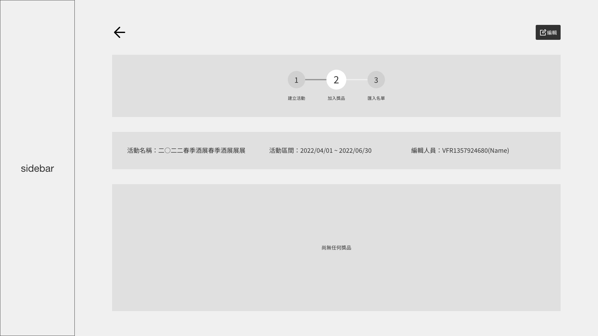 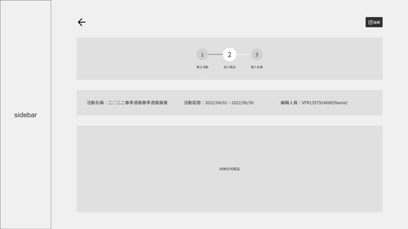
點選『編輯』新增獎項。
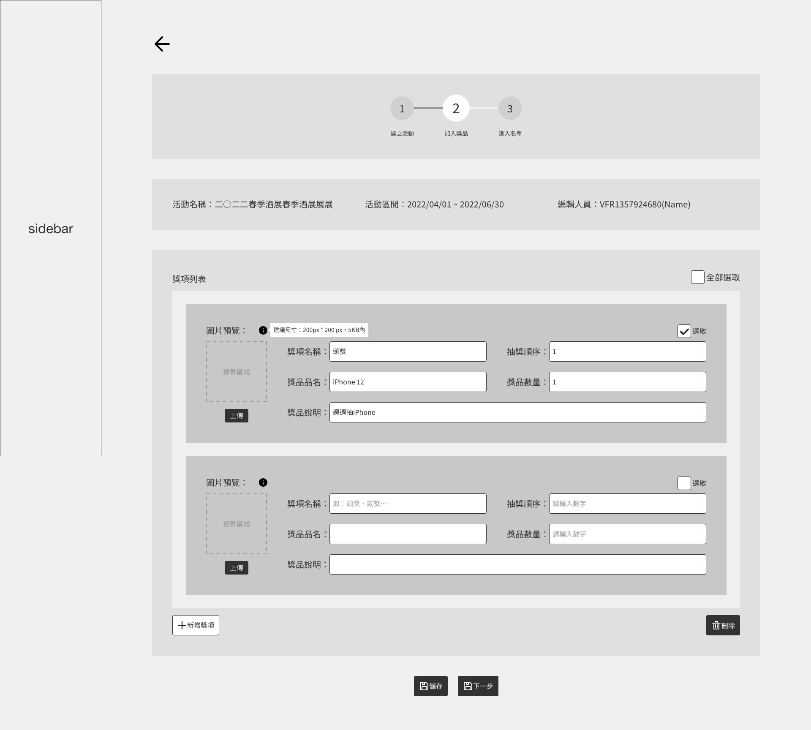若要再新增名稱，可點選『新增獎項』；
反之，要刪除該獎項，可將右上角的checkbox選取後點選『刪除』。
獎項設定完畢點選『儲存』後會回到『列表頁』的『未抽獎』，點選『下一步』的會則繼續。
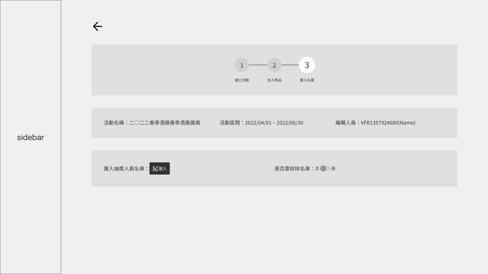
獎項建立完成後，匯入參加抽獎人員之名單；
匯入完成會自動轉跳至『未抽獎列表頁』。
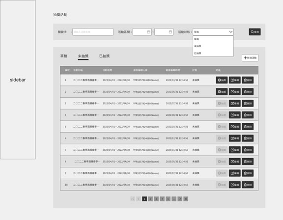
未抽獎列表頁，點選『抽獎』即可完成。
若是獎項臨時需要新增，則可在按下『抽獎』前進入『編輯』新增獎品內容，也可隨時『刪除』該活動。
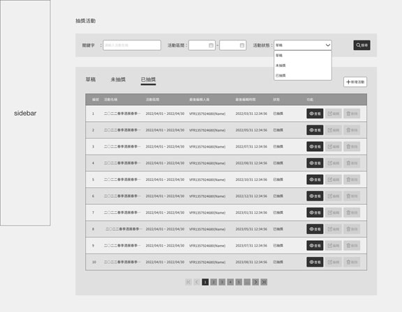
完成抽獎後，可在『已抽獎』內查看得獎者名單。
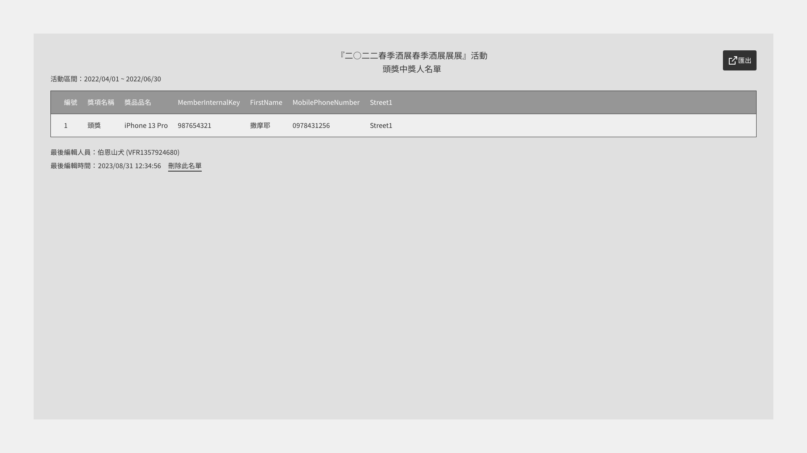 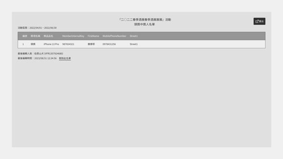只抽單一獎項名單
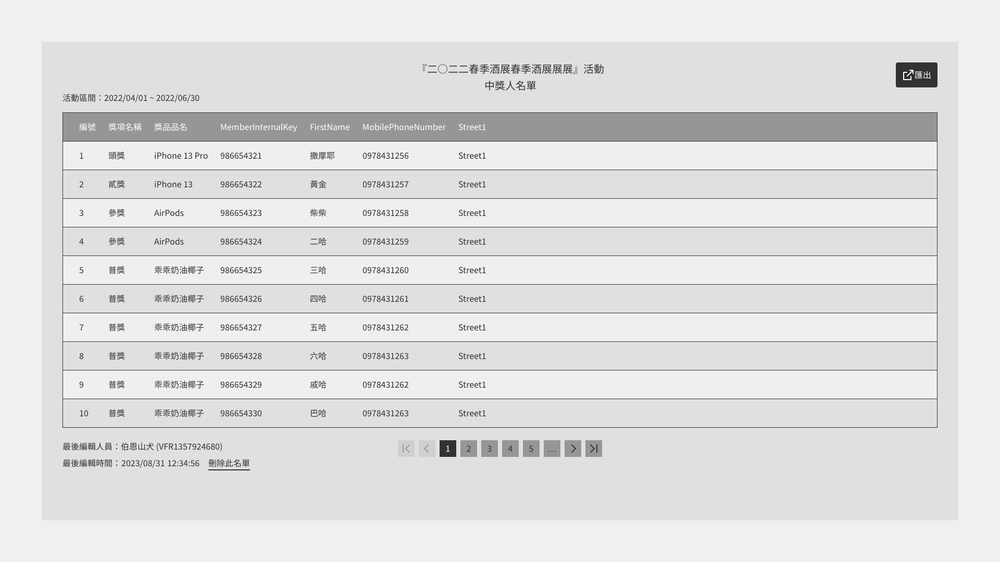 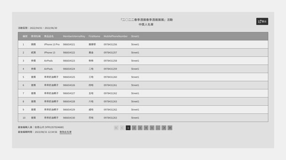抽出多項獎項名單